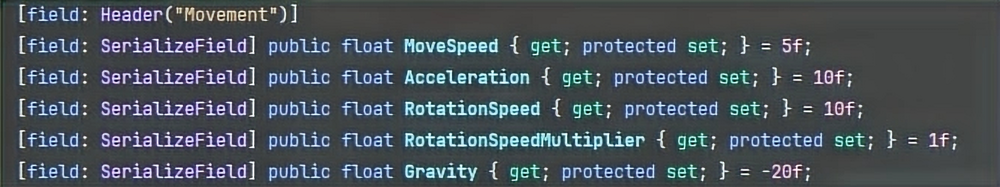
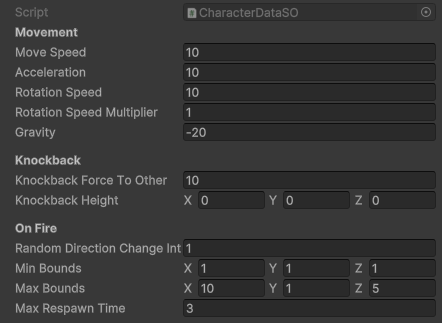
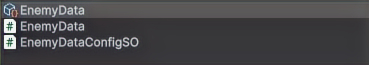
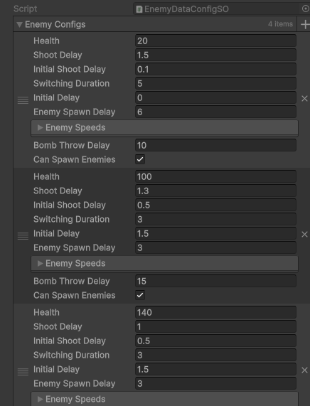

Train Wreck
Train Wreck is a 3D top-down isometric, local co-op, base defense game, where players take the role of train operators delivering cargo across multiple stations while fending off relentless train robbers set in the desert environment of a steamwest world. Players have to maintain fuel levels, defend their train from bandits and repair the damages. Each delivery route is filled with danger, and players achieve victory by successfully delivering cargos to all stations.
Check out the project here:
Train Wreck on itch.io
System Showcase
Object-Oriented State Machine
Vertex Displacement
Visual Effects
Scriptable Object Architecture
Our game is built on a Scriptable Object-based architecture to support a highly modular, scalable, and designer-friendly development process. This approach enabled us to manage diverse gameplay systems such as player behaviors, enemy data, and resource management using clean, data-driven design patterns.
Enemy Configuration via Dependency Injection:
Enemy behaviors and attributes (e.g., health, speed, target preferences) were defined using Scriptable Object arrays. The Game Manager utilized a lightweight dependency injection system to determine which enemy data set to load per level, allowing us to:
- Dynamically adjust enemy difficulty and behavior based on level progression.
- Reuse and combine enemy configurations without duplicating prefabs or scenes.
- Scale combat effectively while maintaining clean separation between logic and data.
Resource and Equipment Systems:
Game resources such as wood, metal, coal, and ammo as well as interactable systems like the machine gun were implemented through Scriptable Objects.
Each resource type included custom logic for tracking usage, regeneration, and interaction effects. For example:
- Coal determined whether the train could move and indirectly controlled enemy spawn logic.
- Ammo values were managed through the Game Manager and tied into player interactions with mounted machine guns.
- Interactable objects like extinguishers and repair tools were linked to Scriptable Object data, streamlining how their effects functioned across different levels and player states.
By combining Scriptable Objects with runtime logic, event-driven systems, and dependency injection, we created a highly flexible and reusable architecture that allowed for fast iteration and clean collaboration between programmers and designers.
Scriptable Object Data implementation example for the Player's Movement
Player Data in Inspector
Single Data configured to support different values for different levels
 Object-Oriented State Machine
To support multiple players with varying states that affect movement and interactions, I designed and implemented a custom object-oriented state machine architecture, drawing inspiration from Hierarchical State Machines and the Factory pattern.
- A dedicated MonoBehaviour class handles all player inputs and delegates behavior.
- All player-related configurations such as movement speed, interaction range, and state machine parameters were stored in Scriptable Objects.
- A mediator "State Factory" class manages state transitions by bridging the MonoBehaviour and individual state classes.
This modular structure allowed for clean separation of concerns, simplified debugging, and easy extensibility for adding new player states or features.
Vertex Displacement
Vertex displacement shader that creates a cartoony bulge effect - mimicking steam pressure building inside the pipe. This effect combines mesh vertex manipulation in Shader Graph with dynamic position data controlled through code.
A unique challenge was handling our modular 3D models, as the effect needed to work seamlessly across multiple pieces. To solve this, I convert the position from world space to object space and use a spline inside the pipes to track the bulge location. The effect remains consistent even with different pipe segments by passing the bulge's position through code.
In game, the effect depicts the flow of steam through the pipes. If the pipes are destroyed, the effect doesn't show and is played again until the pipe is fixed.
Visual Effects
- Designed a firebox explosion with a trailing fire path to emphasize hazard origins.
- Developed fire spawn visuals with a radius indicator ring - reused for bomb danger zones for consistency.
- Built steam burst effects for broken pipes, and dynamic repair VFX (sparks and hit effect while fixing, sparkles when complete).
- Implemented a responsive muzzle flash with multiple layers of fire, smoke and sparks for the mounted machine gun.
- Added throw trail effects for tossed items to improve visual tracking in fast-paced gameplay.
All VFX were optimized for performance, reusable across systems, and aligned with the game's stylized art direction.